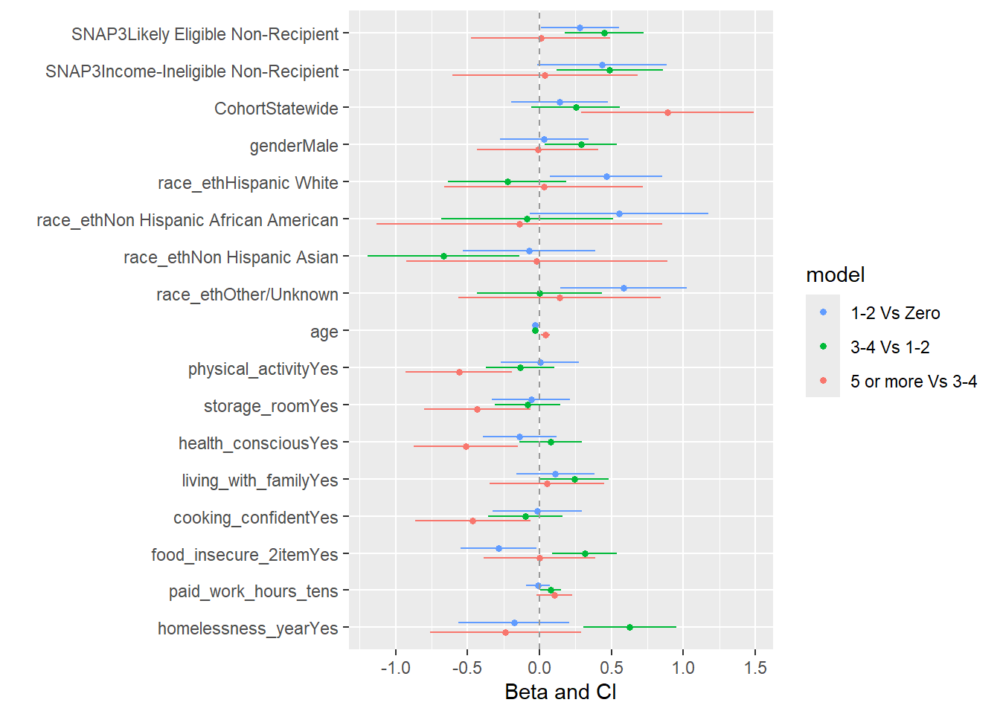
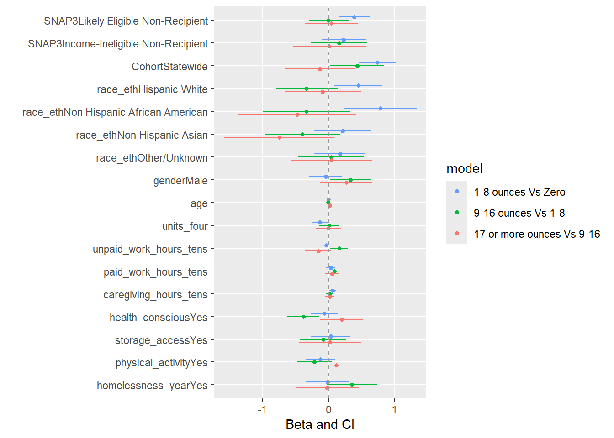
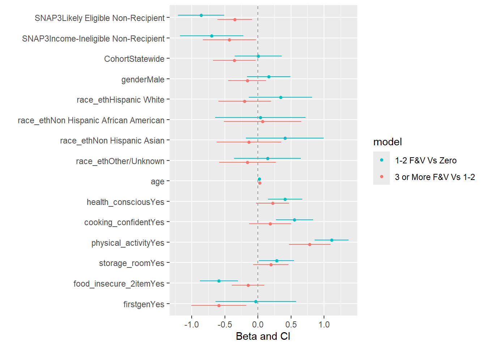

This page shows all procedures used to choose the best fitting model. The BIC and AIC of a Poisson, linear, log transformation, and an ordinal regression model were compared. The ordinal regression models fit the best and had the lowest AICs and BICs. To ensure that there were no major differences in results across the different levels of the dependent variables, stratified logistic regressions were fitted and compared. In the stratified logistic regressions, results stayed rather consistent across the different levels, justifying the use of an ordinal regression model.
cat("AIC for Log Transformation Model:", AIC(log.model))
AIC for Log Transformation Model: 9556.535
Show the code
cat("AIC for Ordinal Model:", AIC(ordinal.mod))
AIC for Ordinal Model: 5226.873
Show the code
cat("BIC for Poisson Model:", BIC(poisson.model))
BIC for Poisson Model: 7537.64
Show the code
cat("BIC for Linear Model:", BIC(linear.model))
BIC for Linear Model: 8199.983
Show the code
cat("BIC for Log Transformation Model:", BIC(log.model))
BIC for Log Transformation Model: 9666.113
Show the code
cat("BIC for Ordinal Model:", BIC(ordinal.mod))
BIC for Ordinal Model: 5342.218
Although AIC and BIC are computed differently between model types, the ordinal model had far lower values, justifying the use of an ordinal regression.
Stratified Logistic Regressions
Show the code
ordinal.mod1 <-glm(ff_cat1~SNAP3 + Cohort + gender + race_eth + age + physical_activity + storage_room + health_conscious + living_with_family + cooking_confident + food_insecure_2item + paid_work_hours_tens + homelessness_year, data = bns_combined_imputed_df, family ="binomial")ordinal.mod2 <-glm(ff_cat2~SNAP3 + Cohort + gender + race_eth + age + physical_activity + storage_room + health_conscious + living_with_family + cooking_confident + food_insecure_2item + paid_work_hours_tens + homelessness_year, data = bns_combined_imputed_df, family ="binomial")ordinal.mod3 <-glm(ff_cat3~SNAP3 + Cohort + gender + race_eth + age + physical_activity + storage_room + health_conscious + living_with_family + cooking_confident + food_insecure_2item + paid_work_hours_tens + homelessness_year, data = bns_combined_imputed_df, family ="binomial")ordinal.mod1 <-tidy(ordinal.mod1) %>%mutate(model ="1-2 Vs Zero")ordinal.mod2 <-tidy(ordinal.mod2) %>%mutate(model ="3-4 Vs 1-2")ordinal.mod3 <-tidy(ordinal.mod3) %>%mutate(model ="5 or more Vs 3-4")models <-bind_rows(ordinal.mod1, ordinal.mod2, ordinal.mod3)dwplot(models) +geom_vline(xintercept =0,colour ="grey60",linetype =2) +xlab("Beta and CI")

In almost all variables, confidence intervals overlapped between stratified models, and estimates were similar, meaning there were no major differences between levels and an ordinal regression was appropriate.
Model Accuracy
Show the code
ff.ordinal.mod2 <- MASS::polr(ff_cat~SNAP3 + Cohort + gender + race_eth + age + physical_activity + storage_room + health_conscious + living_with_family + cooking_confident + food_insecure_2item + paid_work_hours_tens + homelessness_year, data = bns_combined_imputed_df, Hess=TRUE)preds_ff <-augment(ff.ordinal.mod2, type ="class")conf_mat(preds_ff, truth = ff_cat, estimate = .fitted)
Truth
Prediction Zero 1-2 times per week 3-4 times per week
Zero 10 5 0
1-2 times per week 343 1310 506
3-4 times per week 0 1 2
5 or more times per week 0 0 0
Truth
Prediction 5 or more times per week
Zero 0
1-2 times per week 185
3-4 times per week 0
5 or more times per week 0
Show the code
accuracy(preds_ff, truth = ff_cat, estimate = .fitted)
cat("AIC for Log Transformation Model:", AIC(log.model))
AIC for Log Transformation Model: 11626.17
Show the code
cat("AIC for Ordinal Model:", AIC(ordinal.mod))
AIC for Ordinal Model: 5240.351
Show the code
cat("BIC for Poisson Model:", BIC(poisson.model))
BIC for Poisson Model: 20985.13
Show the code
cat("BIC for Linear Model:", BIC(linear.model))
BIC for Linear Model: 14865.93
Show the code
cat("BIC for Log Transformation Model:", BIC(log.model))
BIC for Log Transformation Model: 11735.75
Show the code
cat("BIC for Ordinal Model:", BIC(ordinal.mod))
BIC for Ordinal Model: 5355.696
Although AIC and BIC are computed differently between model types, the ordinal model had far lower values, justifying the use of an ordinal regression
Stratified Logistic Reg
Show the code
ordinal.mod1 <-glm(ssb_cat1~SNAP3 + Cohort + race_eth + gender + age + units_four + unpaid_work_hours_tens + paid_work_hours_tens + caregiving_hours_tens + health_conscious + storage_access + physical_activity + homelessness_year, data = bns_combined_imputed_df, family ="binomial")ordinal.mod2 <-glm(ssb_cat2~SNAP3 + Cohort + race_eth + gender + age + units_four + unpaid_work_hours_tens + paid_work_hours_tens + caregiving_hours_tens + health_conscious + storage_access + physical_activity + homelessness_year, data = bns_combined_imputed_df, family ="binomial")ordinal.mod3 <-glm(ssb_cat3~SNAP3 + Cohort + race_eth + gender + age + units_four + unpaid_work_hours_tens + paid_work_hours_tens + caregiving_hours_tens + health_conscious + storage_access + physical_activity + homelessness_year, data = bns_combined_imputed_df, family ="binomial")ordinal.mod1 <-tidy(ordinal.mod1) %>%mutate(model ="1-8 ounces Vs Zero")ordinal.mod2 <-tidy(ordinal.mod2) %>%mutate(model ="9-16 ounces Vs 1-8")ordinal.mod3 <-tidy(ordinal.mod3) %>%mutate(model ="17 or more ounces Vs 9-16")models <-bind_rows(ordinal.mod1, ordinal.mod2, ordinal.mod3)dwplot(models) +geom_vline(xintercept =0,colour ="grey60",linetype =2) +xlab("Beta and CI")

In almost all variables, confidence intervals overlapped between stratified models, and estimates were similar, meaning there were no major differences between levels and an ordinal regression was appropriate.
Model Accuracy
Show the code
ssb.ordinal.mod2 <- MASS::polr(ssb_cat~SNAP3 + Cohort + race_eth + gender + age + units_four + unpaid_work_hours_tens + paid_work_hours_tens + caregiving_hours_tens + health_conscious + storage_access + physical_activity + homelessness_year, data = bns_combined_imputed_df, Hess=TRUE)preds_SSB <-augment(ssb.ordinal.mod2, type ="class")conf_mat(preds_SSB, truth = ssb_cat, estimate = .fitted)
Truth
Prediction Zero 1-8 ounces 9-16 ounces 17 or more ounces
Zero 473 330 125 74
1-8 ounces 396 518 268 175
9-16 ounces 0 0 0 0
17 or more ounces 0 1 1 1
Show the code
accuracy(preds_SSB, truth = ssb_cat, estimate = .fitted)
cat("AIC for Log Transformation Model:", AIC(log.model))
AIC for Log Transformation Model: 8913.888
Show the code
cat("AIC for Ordinal Model:", AIC(ordinal.mod))
AIC for Ordinal Model: 3506.184
Show the code
cat("BIC for Poisson Model:", BIC(poisson.model))
BIC for Poisson Model: 5927.888
Show the code
cat("BIC for Linear Model:", BIC(linear.model))
BIC for Linear Model: 5794.649
Show the code
cat("BIC for Log Transformation Model:", BIC(log.model))
BIC for Log Transformation Model: 9011.932
Show the code
cat("BIC for Ordinal Model:", BIC(ordinal.mod))
BIC for Ordinal Model: 3604.228
Although AIC and BIC are computed differently between model types, the ordinal model had far lower values, justifying the use of an ordinal regression.
Stratified Logistic Regressions
Show the code
FV_one_vs_zero <-glm(q77_one_vs_zero~SNAP3 + Cohort + gender + race_eth + age + health_conscious + cooking_confident + physical_activity + storage_room + food_insecure_2item + firstgen, data = bns_combined_imputed_df, family ="binomial")FV_one_vs_three_or_more <-glm(q77_one_vs_three_or_more~SNAP3 + Cohort + gender + race_eth + age + health_conscious + cooking_confident + physical_activity + storage_room + food_insecure_2item + firstgen, data = bns_combined_imputed_df, family ="binomial")fv1_model_tidy <-tidy(FV_one_vs_zero) %>%mutate(model ="1-2 F&V Vs Zero")fv2_model_tidy <-tidy(FV_one_vs_three_or_more) %>%mutate(model ="3 or More F&V Vs 1-2") FV2_models <-bind_rows(fv1_model_tidy, fv2_model_tidy)dwplot(FV2_models) +geom_vline(xintercept =0,colour ="grey60",linetype =2) +xlab("Beta and CI")

In most variables, confidence intervals overlapped between stratified models, and estimates were similar, meaning there were no major differences between levels and an ordinal regression is appropriate. However, there were some notable differences between levels such as with likely eligible non-recipients, food insecure students, and first-generation students.
Model Accuracy
Show the code
FV.ordinal.mod2 <- MASS::polr(fruits3~SNAP3 + Cohort + gender + race_eth + age + health_conscious + cooking_confident + physical_activity + storage_room + food_insecure_2item + firstgen, data = bns_combined_imputed_df, Hess=TRUE)preds_FV <-augment(FV.ordinal.mod2, type ="class")conf_mat(preds_FV, truth = fruits3, estimate = .fitted)
Truth
Prediction 0 1-2 3 or more
0 2 1 0
1-2 314 1688 349
3 or more 0 2 6
Show the code
accuracy(preds_FV, truth = fruits3, estimate = .fitted)